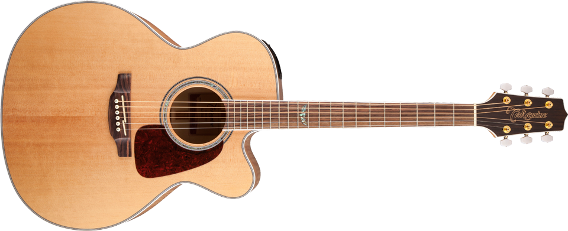
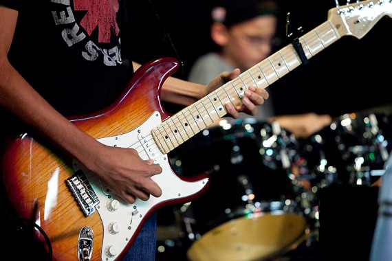
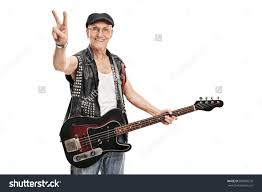

One of my hobbies is playing the guitar. I started playing when I was 14 years old because I wanted to eventually learn how to play the banjo, but my mom wanted me to start on guitar. My father let me use his guitar to practice on my own. By the end of the summer, I had taught myself many chords and how to finger pick.
Quickly after learning the basics of guitar, I began playing with my friends. We would have jam sessions every few weeks to learn and play songs that we liked. Sometimes, some of my friends would bring and play other instruments. Playing guitar in this setting not only helped me learn as a guitarist, but also helped me grow as a musician.
Starting in my sophomore year of highschool, I began to play guitar and drums for my church. The worship leader taught me a lot of new things and helped me broaden my skills as a guitarist. Playing for church also helped me get used to playing in front of people on a stage. Now I am a worship leader for the youth ministry at my church.
Playing guitar has broadened my skills as a musician and helped me feel comfortable playing in front of people.It is one of my favorite things to do to pass the time. Now I can't imgaine not being able to play guitar. Learning how to play has also given me the sense that I can do anything if I put my mind to it.
By Ladson D.